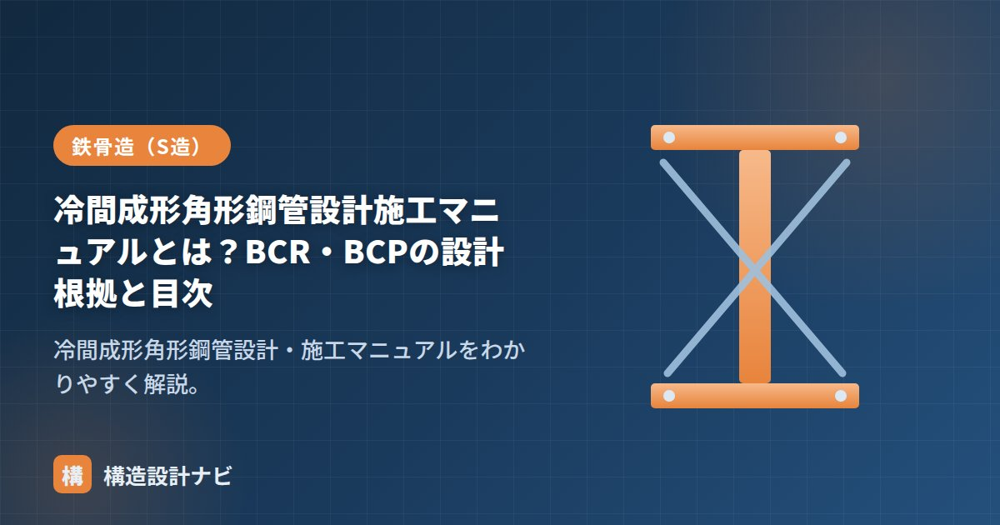

冷間成形角形鋼管設計施工マニュアルとは？BCR・BCPの設計根拠と目次

冷間成形角形鋼管設計・施工マニュアルは、鉄骨造（S造）の柱に多く使われる角形鋼管（コラム）のうち、冷間成形でつくられたものの設計・施工ルールをまとめた資料です。代表的な材種がBCRとBCPです。
冷間成形とは：なぜ特別なルールが必要か
角形鋼管は、鋼板を常温で曲げ加工（冷間成形）してつくります。冷間で加工すると、曲げた角部が硬く・もろくなり（加工硬化）、変形能力が低下します。そのため通常の鋼構造設計規準に加えて、地震時に柱に余裕を持たせる（応力を割り増す）といった特別な配慮が必要になります。
BCRとBCPの違い
| 材種 | 成形方法 | 主な強度区分 |
|---|---|---|
| BCR295 | ロール成形（連続的に丸めて角にする） | 295N/mm²級 |
| BCP235 | プレス成形（板を曲げて溶接） | 235N/mm²級 |
| BCP325 | プレス成形 | 325N/mm²級 |
BCR（Box Column Roll）はロール成形、BCP（Box Column Press）はプレス成形を表します。一般にBCRは中小規模、BCPは板厚の大きい大規模建物で使われることが多い材種です。
設計根拠：柱の応力割増し
このマニュアルの最大のポイントは、冷間成形角形鋼管の柱は、地震時に塑性変形が梁ではなく柱に集中しやすいことへの配慮です。柱の変形能力が低いため、保有水平耐力の検討時などに柱の応力（耐力）を割り増して安全側に設計します。割増し係数は材種・接合形式により定められています。
目次（主な構成）
| 項目 | 主な内容 |
|---|---|
| 材料 | BCR・BCPの規格・機械的性質 |
| 設計 | 柱の応力割増し、柱梁耐力比、接合部（ダイアフラム） |
| 接合・施工 | 溶接、通しダイアフラム形式、品質管理 |
柱梁接合部・ダイアフラムは「鋼構造接合部設計指針」、部材設計の基本は「鋼構造設計規準」、施工は「JASS6」をどうぞ。
よくある質問
Q1. なぜ冷間成形角形鋼管は柱の応力を割り増すのですか？
冷間成形は常温で鋼板を曲げて角形に成形するため、特に角部で加工硬化が生じ、伸び能力（変形性能）が低下します。大地震時に柱梁接合部へ塑性変形が集中したときに脆く壊れないよう、柱に生じる応力を割り増して安全側に設計する規定が設けられています。
Q2. BCRとBCPはどう使い分けますか？
BCR（ロール成形）は比較的小〜中断面で経済的、BCP（プレス成形）は板厚の厚い大断面に対応できます。建物規模・柱断面・板厚に応じて選定し、いずれもマニュアルの規定に従って応力割増しや接合部の検討を行います。
構造計算書を審査する立場になってからは、柱梁耐力比の計算に冷間成形角形鋼管の応力割増しがきちんと反映されているかを真っ先に確認します。この割増しを見落としたまま柱梁耐力比を満たしている計算書に、何度か出会ったことがあります。
まとめ
- 冷間成形角形鋼管マニュアルは、BCR・BCPの柱の設計・施工ルールをまとめた資料。
- BCR295＝ロール成形、BCP235・BCP325＝プレス成形。
- 冷間成形で変形能力が下がるため、地震時に柱の応力を割り増して設計するのが要点。